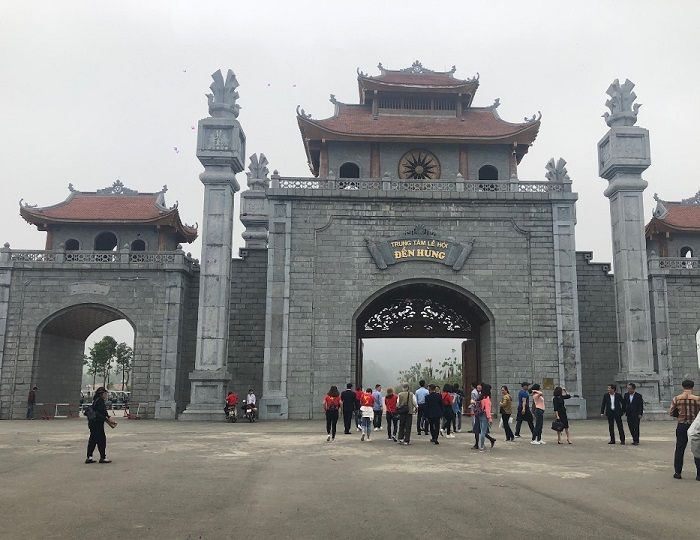
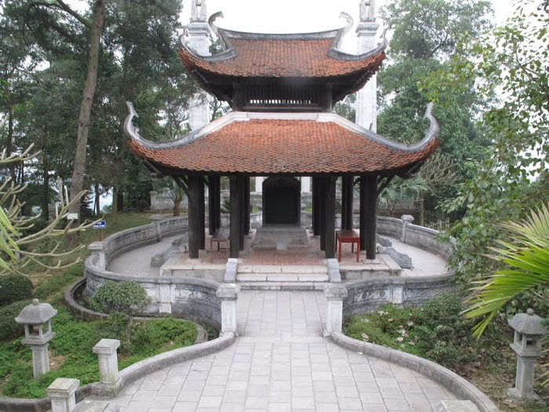
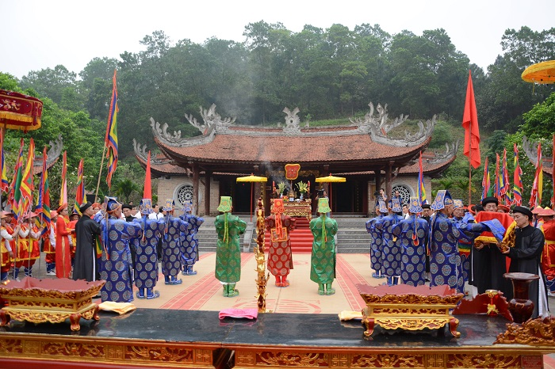

Địa chỉ: Thôn Cổ Tích - xã Hy Cương - huyện Lâm Thao - tỉnh Phú Thọ
Đền Hùng là di tích lịch sử văn hóa cấp quốc gia từng là kinh đô của nước Văn Lang từ hàng nghìn năm trước thờ các vua Hùng để tưởng nhớ công lao dựng nước. Đền Hùng tọa lạc trên núi Hùng, thuộc vùng Phong Châu cách trung tâm thành phố Việt Trì khoảng 8km về hướng Bắc và cách Hà Nội khoảng 100km.
Di tích lịch sử nổi tiếng Phú Thọ này gồm 4 ngôi đền, 1 lăng tẩm và 1 ngôi chùa có khung cảnh thiên nhiên hùng vĩ, hội tụ đủ yếu tố sơn thủy hữu tình. Không chỉ là di tích đẹp, đền Hùng còn có phong cảnh đẹp là niềm tự hào của người dân Phú Thọ nói riêng và nước Việt Nam nói chung. Lễ hội đền Hùng được tổ chức hàng năm vào ngày 10/3 thu hút đông đảo du khách tham dự. Từ trung tâm Hà Nội tới đền Hùng bạn đi theo hướng quốc lộ 2 bằng xe máy hoặc đi tuyến tàu hỏa Hà Nội - Lào Cai.
Địa chỉ: Xã Hiền Lương, huyện Hạ Hoà, tỉnh Phú Thọ
Địa điểm du lịch tâm linh ở Phú Thọ này sở hữu vị trí tuyệt đẹp, tọa lạc giữa cánh đồng lúa xanh bát ngát nằm sát bên dòng sông Thao. Ngôi đền gắn liền với sự tích, những người con được mẹ Âu Cơ mang lên núi thì người con cả dựng kinh đô Văn Lang tại vùng Phong Châu cai quan đất nước được gọi là vua Hùng. Còn số người con còn lại theo mẹ xuống dòng sông Thao khai hoang trồng lúa, nuôi tằm.
Đền mẫu Âu Cơ được phân thành 5 gian, mỗi gian có cột gỗ được lợp mái bằng ngói, phía sau đền là cây cổ thụ quanh năm phủ bóng mát. Trong đền có tượng Quốc mẫu Âu Cơ cao 0,94m đội mũ kim cương lấp lánh, hình dáng thanh tú, phúc hậu, đi đôi hài cong được đặt trên ngai vàng. Ấn tượng nhất xung quanh ngai vàng được chạm trổ và điêu khắc mai, rồng, tùng, cúc tinh xảo. Toàn bộ cột kèo trong đền mẫu đều được chạm trổ bằng sơn son thiếp vàng sang trọng.
Địa chỉ: Đền Hùng, Chu Hoá, Thành phố Việt Trì, Phú Thọ
Đền Lạc Long Quân tọa lạc trong khu di tích lịch sử Đền Hùng, thu hút du khách với thiết kế hoành tráng, uy nghi và có địa thế đắc địa. Địa điểm du lịch nổi tiếng ở Phú Thọ này có tổng diện tích khoảng 14ha, tọa lạc trên một ngọn đồi, hai bên là Bạch Hổ và Thanh Long, trước cửa đền là sông Hồng, hồ Hóc Trai. Ngôi đền được phân thành nhiều hạng mục như: Cổng biểu tượng, cổng tam quan, phương đình, sân hành lễ, khu đền thờ chính và tả vu.

Khi bước chân vào cửa đên Lạc Long Quân bạn sẽ được chiêm ngưỡng hồ cá chép nằm dưới hồ Hóc Trai tuyệt đẹp. Khu cổng Tam quan gồm có 4 cột đá được chạm họa tiết hoa văn tinh tế và uy nghi, linh thiêng với hình người giã gạo, đàn chim. Hai bên sân của đền là nhà hữu vu và tả vu được lợp gỗ lim, lợp mái ngói tất cả gồm 5 gian. Đền Lạc Long Quân là một trong những điểm đến được nhiều du khách yêu thích khi tới đền Hùng.